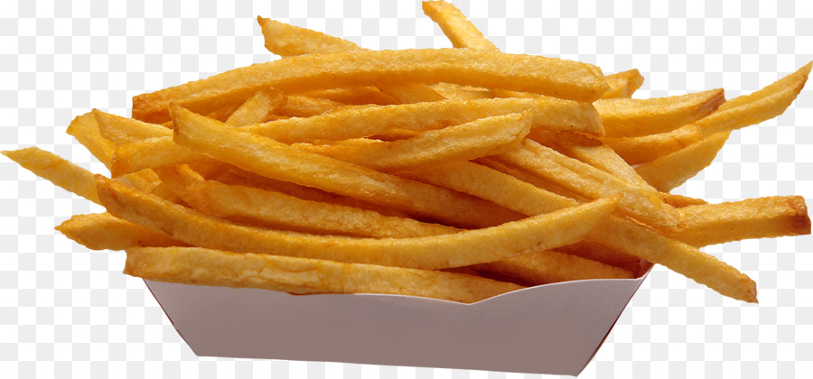

Papas fritas
Receta de papas fritas caseras

Ingredientes
- 3 o 4 papas (300gr)
- Aceite
- Sal
Elaboración (Pasos)
- Pelar papas
- Cortalas en baston
- Calentar aceite en una sarten
- Cocinar hasta que esten doradas
- Removerlas del aceite y salar a gusto
----------------------------------------------------------